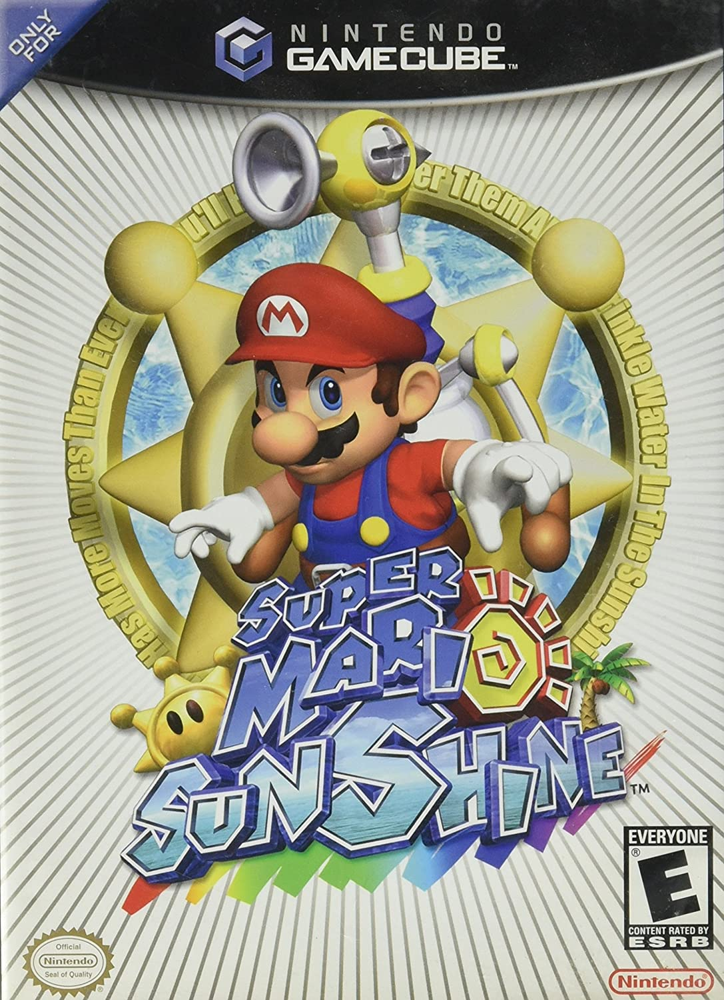
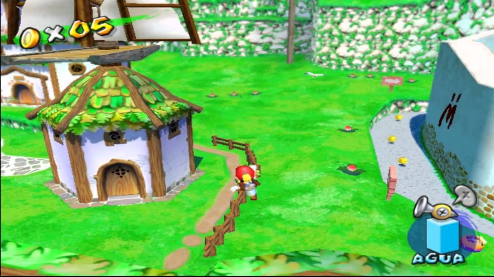
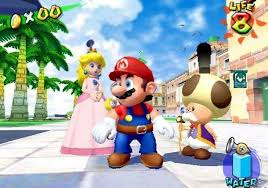
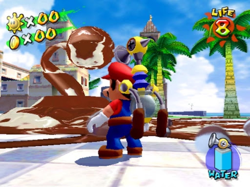

Super Mario Sunshine (2002)
Super Mario Sunshine was the first major Mario game to reach the Gamecube as one of the main titles in the console. It is considered a masterpiece combining the original movement of Mario from the N64 with a new water cannon strapped to Mario's back called the Fludd. One of the must play games of the Gamecube.
  Reviews
| Reviewers | Score |
|---|---|
| IGN | 9.4 |
| Gamespot | 8 |
| Metacritic | 9.2 |
| Total | 8.86 |